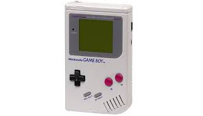
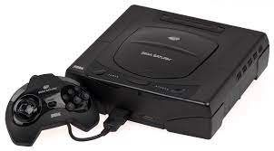

Por conta da falta de documentação é difícil de se determinar qual teria sido o primeiro jogo eletrônico criado porém a primeira menção ao que se assemelha a um videojogo datado de 1947; enquanto testavam equipamentos para o desenvolvimento de televisores e monitores, criaram um dispositivo de entretenimento ligando um tubo de raios catódicos em um osciloscópio, patenteado no ano seguinte pelos físicos Thomas T. Goldsmith Jr. e Estle Ray Mann. Inspirado na tecnologia de radares, consistia em um dispositivo analógico que permitia controlar um ponto vetorizado na tela, simulando mísseis acertando alvos, que eram simplesmente pontos fixos na tela.
Thomas GoldsmithEstle Ray Mann
Em 1949, Charlie Adama desenvolveu um programa de computador que produzia uma bolinha saltitante no computador Whirlwind. Existem poucas informações sobre esse projeto e, nem sempre é listado como contribuinte para a história dos jogos.
O jornal Times afirma, que cientista da computação britânico Christopher Strachey apareceu no Laboratório Nacional de Física com um programa de computador que simulava o jogo de tabuleiro damas para o computador Pilot ACE, em 1950.
Em 1952, O professor de ciência da computação Alexander Shafto Douglas criou o primeiro jogo gráfico para computador na Universidade de Cambrige, um simulador do jogo da velha.
Em 1972, é lançado o primeiro console doméstico da história: Odyssey da empresa Magnavox. Neste mesmo ano, Nolan Bushnell, agora trabalhando na Atari, lança o primeiro grande sucesso comercial de um videojogo, o jogo arcade Pong
A grande quantidade de clones do jogo Pong levou a indústria à primeira grande quebra em 1977, sendo superado principalmente pelo jogo Space Invaders, dando início à era dourada dos jogos arcade, inspirando a implantação de máquinas em lugares de conveniência como restaurantes, centros comerciais, etc. Também nessa época começaram a surgir as primeiras revistas especializadas em jogos, o jogo também foi lançado para o console Atari 2600 quadruplicando as vendas do console.
Em 1979, a Milton Bladley Company lança o Microvision, o primeiro console portátil a utilizar cartuchos trocáveis, em 1980 a Nintendo lança a o primeiro dispositivo da sua linha de portáteis Game & Watch que foi produzida até 1991.
PongSpace Invaders
Em 1983, houve uma grande quebra da indústria dos jogos eletrônicos onde houve uma queda de faturamento de 3,2 bilhões de dólares estadunidenses para 100 milhões em 1985. Ainda no mesmo ano, a Nintendo lança o seu console no Japão, o Famicom, que chega aos Estados Unidos em 1985 com o nome de Nintendo Entertainment System, o console é considerado um marco do renascimento dos jogos eletrônicos. Ainda no mesmo ano a Sega lança o Mark III no Japão que chega aos Estados Unidos em 1986 com o nome de Master System.
Em 1988, a Sega lança o Genesis (Mega Drive), seu primeiro console 16 bits, seu principal competidos seria o Super Nintendo Entertainment System, lançado em 1990.
Em 1989, após o sucesso do NES e aproveitando a fórmula do Game & Watch, a Nintendo lança o Game Boy, primeiro portátil a fazer grande sucesso na indústria, ainda no mesmo ano, a Atari lança seu competidor, o Lynx, o primeiro portátil com tela colorida, em 1990 a Sega lança o seu portátil, o Game Gear.
Mega Drive

GameboyLynxGame Gear
Em 1994, a Sega lança o seu console Sega Saturn, no mesmo ano, a Sony lança o seu primeiro console, o PlayStation, em 1996 a Nintendo lança o Nintendo 64.
Em 1998, a Sega lança o Dreamcast e a Nintendo lança o portátil Game Boy Color, em 1999 a Bandai lança seu portátil, o WonderSwan, em 2000 a Sony lança o PlayStation 2 que detém o título de console mais vendido da história, em 2001 a Nintendo lança o Gamecube, o portátil Game Boy Advance e a Microsoft lança o Xbox.

Sega SaturnPlayStationDreamcast
Em 2004, a Nintendo lança o Nintendo DS o portátil mais vendido da história, no mesmo ano, a Sony lança o seu competidor, o PlayStation Portable.
Em 2005, a Microsoft lança o Xbox 360, em 2006 a Sony lança o PlayStation 3 e a Nintendo lança o Wii.
Em 2011, a Nintendo lança o portátil Nintendo 3DS, no mesmo ano a Sony lança o portátil PlayStation Vita. Em 2012 a Nintendo lança o Wii U, em 2013 a Sony lança o PlayStation 4 e a Microsoft lança o Xbox One.
Em 2017, a Nintendo lança o console Nintendo Switch.
Em 2020 a Microsoft lança o Xbox Series X|S e a Sony lança o PlayStation 5.